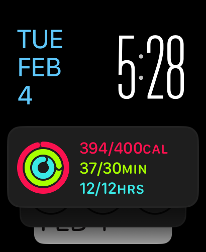

February 2025
iOS & Apple news
Apple released iOS 18.3. The release includes Visual Intelligence and Notification Summary Improvements.
Apple Visual Intelligence in iOS 18.3 adds new features, like animal recognition, plant identification, and event scheduling all from the camera. Here is a look at this being tested on landmarks, animals, and more:
Apple now has More Than 2.35 Billion Active Devices Worldwide
Apple reported first quarter results. `All-time records for total company revenue and EPS. Services revenue reaches new all-time high.'
Jason Snell takes a look at Apple's financial info, and created Apple’s reports record revenue for Q1 2025 (with charts).
Apple opened a new store, the Miami Worldcenter, in downtown Miami.
Stephen Robles visited the new Miami Apple store:
He also interviewed Apple SVP Deirdre O'Brien:
February is Black history month, and Apple introduced the 2025 Black Unity Collection which includes a new Apple Watch Black Unity Sport Loop, a new watch face, and iPhone and iPad wallpapers.
Apple Music users can now access their 2025 Replay playlist. It ranks all of the music you've been listening to onApple Musi from 1 to 100. It updates weekly letting you easily access your most streamed songs as the year progresses.
Apple said in a statement that It Doesn't Approve of EU Porn App
And here is a nice iOS map detail:
I was today years old when I realized Apple Park is in the upper corner of the Maps icon pic.twitter.com/XM09sis7tO
— Luke Miani (@LukeMiani) January 11, 2025
John Gruber wrote about Siri: Siri Is Super Dumb and Getting Dumber. This is worth reading. It's a detailed (though narrow) assessment, backed up with very concrete examples of Siri's replies plus others (Google, etc.).
iOS apps
Just a few hours ago, Apple released Invites, a new app for creating and managing invitations. Just in time for our iPUG meeting today ;-)
Macrumors gives and overview and a demo:
tips & tricks
The new focus mode called Reduce Interruptions is worth trying. It uses AI to decide what notifications to deliver quietly and what to deliver normally. Here is an overview, by Cult of Mac. Olga used this mode recently and recommends it.
How to Generate Images in iPhone's Messages App Using DALL·E.
How to troubleshoot Home app if you get a `no response' notification. Olga shared her experiences with this. Here is Shane Whatley. Note the video is 2 years old but it's still applicable and thorough.
How to customize your notification summaries in iOS 18.1 and above:
gadgets & accessories
Stephen Robles shows what gadgets and accessories he uses for travel, including a case for the AirTags he uses for his travel bag. The Elevation Lab TimeCapsule is a case that makes the AirTag battery last 10 years:
Petra told us about her Magnetic Wireless Charger for iPhone: 3 in 1 Travel Charging Station for Apple Devices.
watch
Tip: if you want to go back to a recently used app on your Watch, double-tap the Digital Crown to get a list of your recently used apps.
In honor of Heart Month, Apple watch owners can earn an award by completing a workout to fill their Exercise ring on Friday, February 14, which is Valentine's Day, reports Macrumors.
Olga discussed aspects of the watchOS 11 interface:

next iPUG
Our next iPUG meeting will be Tuesday, March 11, 2025 at 7 pm AZ / MT.